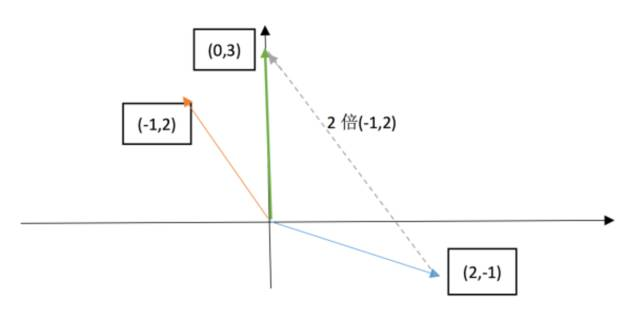

Lecture 1: The geometric interpretation of equations
This lecture is a simple intro of Linear Algebra.
Beginning with solving the system of equations, we will introduce the row picture and column picture.
Gemetric form of equations
suppose we have a equations:
$$ \left{ \begin{array}{c} 2x - y = 0 \ -x + 2y = 3 \end{array} \right.
$$
row picture
we can extract the unknows and coefficients tp transform the equation to a matrix form like $Ax=b$:
$$ \left[ \begin{matrix} 2 & -1 \ -1 & 2 \end{matrix} \right] \left[ \begin{matrix} x \ y \end{matrix} \right] = \left[ \begin{matrix} 0 \ 3 \end{matrix} \right]
$$ the row picture is select one raw from the coefficient matrix and multiple with the unkonws, then we can draw a picture like this:

two unparallel line must intersect at one point((1, 2) for this equaitons), and that point is the solution of the equations.
column picture
For columu picture, we just extract the coefficients:
$$ x \left[ \begin{matrix} 2 \ -1 \end{matrix} \right] + y \left[ \begin{matrix} -1 \ 2 \end{matrix} \right] = \left[ \begin{matrix} 0 \ 3 \end{matrix} \right]
$$ now the problem becomes: find out the right linear combination of the column vectors to get $\left[\begin{matrix}0 \ 3\end{matrix}\right]$.
And the column picture is like this:

Notes: for this equations, all the $\left[\begin{matrix}x \ y\end{matrix}\right]$ could give out all the b, which means it could full-fill the 2-dimension plane.
Extension
Now we look at the 3x3 example(3 unknows and 3 equations):
$$ \left{ \begin{array}{c} 2x - y = 0 \ -x + 2y - z = -1 \ -3y + 4z = 4 \end{array} \right.
$$ we can extract a $Ax=b$ like this:
$$ \left[ \begin{matrix} 2 & -1 & 0 \ -1 & 2 & -1 \
- & -3 & 4
\end{matrix}
\right] \left[ \begin{matrix} x \ y \ z \end{matrix} \right] = \left[ \begin{matrix} 0 \ -1 \ 4 \end{matrix} \right]
$$ Its row picture is in 3-dimension coordinate, each equation is a 2-dimension plane.
For this system of euqations, we can roughly reckon that these three plane intersect at one point. But as the number of unknow increase(extense to a higher dimension), row picture become more abstract for us, because we can draw out its picture.
If we use column picture:
$$ x \left[ \begin{matrix} 2 \ -1 \ 0 \end{matrix} \right]
- y
\left[
\begin{matrix}
\end{matrix} \right]-1 \\ -2 \\ -3 - z
\left[
\begin{matrix}
\end{matrix} \right] = \left[ \begin{matrix}0 \\ -1 \\ 4
\end{matrix} \right] $$0 \\ -1 \\ 4
on the left size is the combination of the column vectors of matrix $A$, and right hand side is the result, then the problem still is a linear combination case. And the solution for this example is quiet simple: $\left[\begin{matrix}0\0\1\end{matrix}\right]$.
Why column picture
Comparing with the row picture, column pictrure is a more systematic way to solve the equations: to find out a linear combination.
Besides, if we change the vector $b$, for column picture case, we just need to find another combination, but for row picture, we need draw another 3-dimension picture.
The solution of Ax=b
Does $Ax=b$ always have a solution for evert given vector b?
In $\mathbb{R}^3$ case, b is a 3-dimension vector, and all the b fill the $\mathbb{R}^3$, so the problem become:
do all the linear combinations of the columns fill the 3-dimension space.
In other word, if $Ax=b$ have solution, $b$ must be the linear combination of $A's$ columns.
Matrix multiplication
For a given matrix $A=\left[\begin{matrix}2 & 5\ 1 & 3 \end{matrix}\right]$ and vector $x=\left[\begin{matrix}1 \ 2\end{matrix}\right]$, how we compute their multiple?
- use column
$x$ means the linear combinatin of $A$, every componet of $x$ multiple the correspondind column vector of $A$:
$$ 1\cdot \left[ \begin{matrix} 2 \ 1 \end{matrix} \right] + 2\cdot \left[ \begin{matrix} 51 \ 3 \end{matrix} \right] = \left[ \begin{matrix} 12 \ 7 \end{matrix} \right]
$$
- use row: normal way.